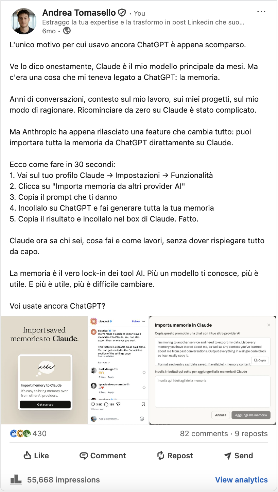

Per professionisti, consulenti e imprenditori.
Ti facciamo le domande giuste per far emergere quello che sai. Lo trasformiamo in 3 post a settimana, con la tua voce, le tue esperienze e i tuoi punti di vista.
Tu parli e approvi. Noi scriviamo e pubblichiamo.
Primo mese 99 €. Poi 199 €/mese. Disdici quando vuoi.
Nota preview · Numero WhatsApp non ancora configurato: il bottone è inattivo. Imposta il numero nei Tweaks.
Devi trovare gli argomenti, scrivere i post, rivederli e pubblicare con costanza. Tutto mentre hai già clienti, progetti e un’attività da seguire.
E spesso le cose più interessanti da raccontare sono quelle che dai per scontate: come risolvi un problema, perché fai una scelta, cosa hai imparato da un errore. Quando ne parli con un cliente vengono fuori. Davanti a una pagina bianca, molto meno.
Con Discerns parti da una conversazione. Alle domande e ai contenuti pensiamo noi.
Da un’intervista con Andrea Tomasello, founder di Discerns, a un contenuto pubblicato sul suo profilo LinkedIn.
Discerns: Usi Claude da mesi. Perché ci hai messo tanto a lasciare ChatGPT del tutto?
Andrea: Per una cosa sola, la memoria. Avevo anni di conversazioni là dentro: il contesto sul mio lavoro, sui progetti, sul modo in cui ragiono. Ricominciare da zero su Claude voleva dire rispiegare tutto ogni volta. Quindi tenevo aperti tutti e due, uno per il modello e uno per la memoria.
Discerns: E cosa è cambiato?
Andrea: Anthropic ha messo l’import della memoria. Ti danno un prompt, lo incolli in ChatGPT, lui ti tira fuori tutto quello che sa di te, e lo incolli in Claude. Trenta secondi.
Discerns: Perché per te è una cosa da raccontare e non solo una funzione in più?
Andrea: Perché la memoria è il vero lock-in dei tool AI. Più un modello ti conosce, più è utile. E più è utile, più diventa difficile cambiare. La gente confronta i modelli, ma quello che ti tiene legato è quanto ti conoscono.
Le parti evidenziate sono diventate il post.

Vedi il post su LinkedInAndrea Tomasello è il founder di Discerns. Prepariamo i contenuti del suo profilo con questo sistema: Andrea li rivede e li approva prima della pubblicazione, proprio come farai tu.
Guarda i post di Andrea su LinkedInCi racconti il tuo lavoro. Ti facciamo domande e approfondiamo esperienze, scelte e idee che vale la pena condividere. Non devi preparare una lista di argomenti.
Trasformiamo quello che emerge in contenuti con il tuo modo di esprimerti, pensati per le persone che vuoi raggiungere.
Leggi i post, ci segnali eventuali modifiche e li approvi. Noi ci occupiamo di programmarli e pubblicarli.
Dopo ogni intervista organizziamo esperienze, metodo e punti di vista nel tuo cervello digitale. Lo usiamo per creare i contenuti e lo arricchiamo nel tempo.
Puoi collegarlo a ChatGPT o Claude e chiedere, per esempio: “Scrivi un post su come gestisco le obiezioni dei clienti”. L’AI potrà lavorare a partire dalle esperienze e dalle idee che abbiamo raccolto con te su quel tema.
È una conoscenza che puoi riutilizzare anche tu. Collegarla ai tuoi strumenti è facoltativo: possiamo continuare a occuparci noi di tutti i post.
Anche con ChatGPT, devi trovare gli argomenti, spiegare il tuo punto di vista, rivedere i testi e organizzare le uscite.
Un’agenzia o un ghostwriter possono occuparsi dei tuoi contenuti. Con Discerns deleghi intervista, scrittura e pubblicazione a 199 € al mese. In più, costruiamo il tuo cervello digitale: raccoglie quello che sai e puoi riutilizzarlo anche con ChatGPT o Claude.
199 €/mese
Il primo mese: 99 €
Nessun costo di setup. Disdici quando vuoi.
Soddisfatti o rimborsati: hai 10 giorni dalla consegna dei primi post, senza domande.
Scrivici su WhatsAppNota preview · Dicitura IVA (inclusa/esclusa) da confermare con Andrea prima della pubblicazione.
Scrivici cosa fai e cosa vorresti far conoscere del tuo lavoro. Ti spieghiamo come partire.
Primo mese 99 €. Poi 199 €/mese.